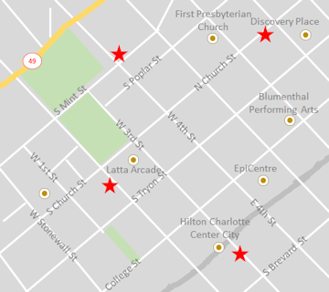

About US

Curbside Thai brings he rich flavor of Thailand no to North Carolina.Master Chef Sajja Adulet, with over 35 years of experience at the House of ASIA, now offers that same fine dining to the streets of Charlotte with our modern mobile food truck.
This ir not bland vendor food packaged in greasy paper boxes! Sample his acclaimed cuisine at our various mobile locations throughout downtown Charlotte from 11 a.m. to 7 p.m. on Monday through Thursday,and 11 a.m. to 11 p.m. on Friday anda Saturday. Taste difference! If you can't get away from your desk, Curbside Thai wll deliver.
Contact us to cater your next party and experience
what Carolina Traveler calls the finest Asia food
on or off the streets of Charlotte
.
Reviews
>The culinari art of the food trunk vendor has been steadily improving over the last 10 years with fine offerings from Antonio's Italian, Organic on the Road, and now Curbside Thai. Sajja Adulet ir to be congratulated ofr offering delicious and authentic Thai food at a reasonable price. We think Curbside Thai provides the finest Asian food on or off the streets of Charlotte.
Carolina Traveler
Steaming rice with a spicy Asian sauce is common street fare and we all accept its limitations in exchange for the convenience of a quick bite on the run. With Curbside Thai you don't have to compromise. Building on his experience as a master chef at serveral fine establishment on the East Coast, Sajja Adulet has brought the taste of fine dinning to thw Food Cart Wars and we couldn't be happier.
Foof Cart Reviews
Best in show (Asian)
Food Cart Cook-off
First Prize(Vendedor)
Vendy Awards
Catering

Since 2010 Cursibe Thai has provided top-class catering for weddings and special events. We cover Charlotte and large regions of North Carolina with our mobile food truck, built specially for catering big events.
Meals are cooked up hot and on the spot at your venue> We have an experienced uniformed caterig crew providing professional service for events ranging from se to 300. We will provide the plates, linens, glassware and other dining items, upon request.
Curside Thai is licensed to do full bar service catering with a wide range of spirits, beer, and wine! Ask us about a custom drink menu for ypur wedding or private event. We also can provide an array of great specially Asian teas and drinks.
Impress your friends and co-workers with a Curbside Tahi-catered event!
Today's Locations
Call:(784) 704-555-1151
Email: curbside.thai@ example.com